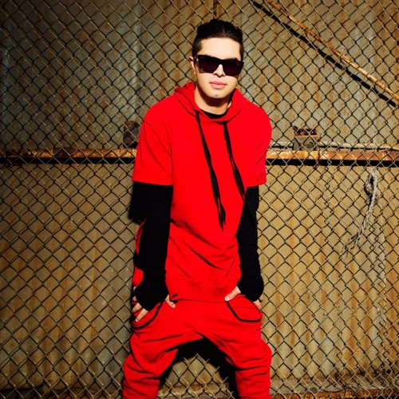
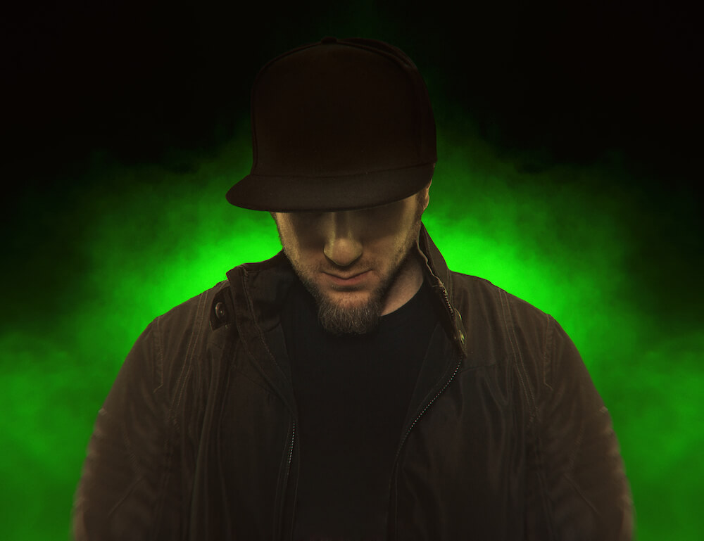
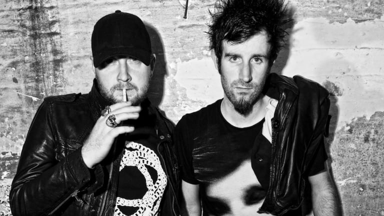
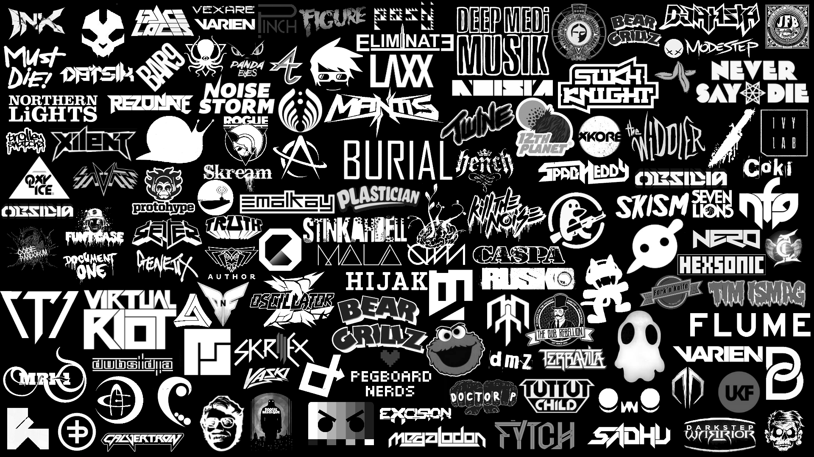
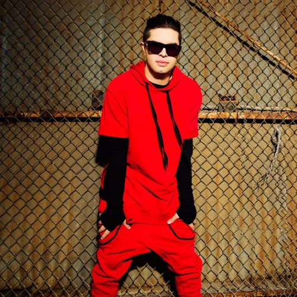
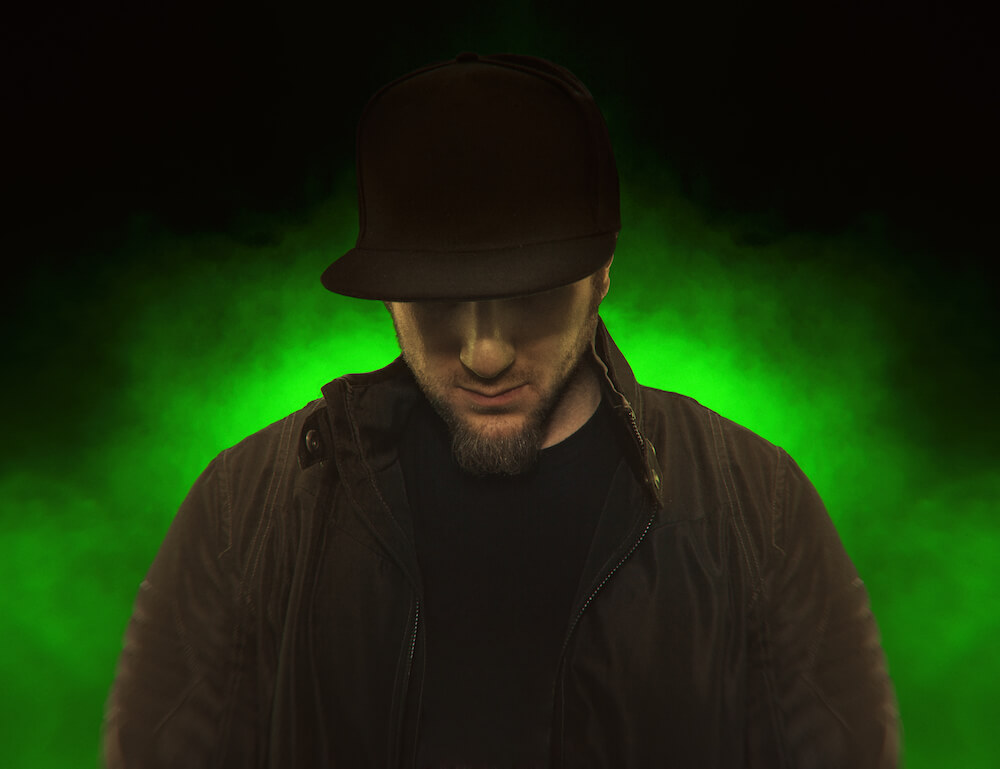
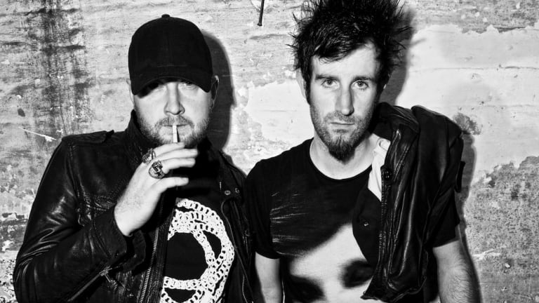

Algunos exponentes del Dasbtep v: son:
Datsik (aunque se tuvo que retirar en 2018)
Excision
Knife Party
Borgore
Y no puede faltar Martin Garrix V:

Dubstep
El dubstep es un género de la música electrónica que surgió a finales de los años 90 y comienzos de los 2000 en Londres, Inglaterra. Es la culminación de un linaje de géneros como el 2-step garage, broken beat, drum and bass, jungle, dub y reggae. El dubstep consiste en un bajo tambaleante (wobble bass), growls y su ritmo se halla desde los 130 hasta los 155 BPM, tomando rangos generales de 140 y 150 BPM.
El dubstep está basado en ritmos sincopados, y con frecuencia incorpora notas tocadas con shuffle o en tresillo. El tempo suele mantenerse en 130, 140 o 150 BPM (160 a 175 BPM en el caso del drumstep). El ritmo del dubstep no suele seguir normalmente los patrones four-on-the-floor habituales en otros estilos de música electrónica de baile como el techno o el house, sino que suele basarse en una estructura formada por golpes de bombo en el primer y tercer tiempo del compás (una característica heredada del 2 step) y loops de percusión basados en compases diferentes al 4/4. Es frecuente que al oír de modo aislado el patrón rítmico, el oyente tenga la sensación de que este está siendo stocado a la mitad de velocidad que la canción. Esta sensación de "doble velocidad" se consigue utilizando de modo rítmico, además de la percusión, otros elementos de la canción, especialmente la línea de bajo. Esta característica es típica del drum and bass, con el que se emparenta el dubstep.
Una característica del dubstep es un tipo de línea de bajo llamada "wobble bass" (en castellano, literalmente, "bajo tambaleante") en la cual una nota de bajo extendida es manipulada musicalmente. Esto contrasta con otros estilos de música electrónica en los cuales una misma muestra sin manipular se reproduce con diferentes pitches para crear una línea de bajo. El wobble bass, en cambio, se produce utilizando un low frequency oscillator para manipular los parámetros del bajo, como la presión de sonido, la saturación o el filter cutoff. El sonido resultante es una línea de bajo dominada por una sola nota de bajo extendida que tiene ese sonido tambaleante característico.
Algunos exponentes del Dasbtep v: son:
Datsik (aunque se tuvo que retirar en 2018)
Excision
Knife Party
Borgore
Y no puede faltar Martin Garrix V:
Dubstep antes
(por ahi del 2012)
Dubstep ahora
(por ahi del 2018)